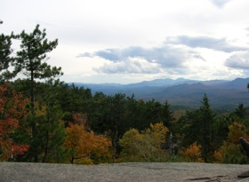
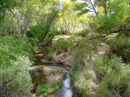

In the field
Raven Ridge Preserve, Vermont

Quantifying relative viewshed quality at different viewpoints
is being used to help The Nature Conservancy manage for recreation
use related to views within Raven Ridge Preserve.
San Pedro River, Arizona

The San Pedro River, which flows north from Sonora into Arizona, is
internationally recognized for its high biodiversity and ecological
significance. The Upper San Pedro draws birders from around the world
to view a broad array of resident and migratory species. Photo credit:
R.Weller/Cochise College.

At a glance
Recreation: The contribution of ecosystems toward providing diverse
outdoor recreational opportunities such as hiking, bird watching, hunting, kayaking, etc.
Viewsheds and recreation: The benefit resulting from viewing
scenic landscapes, such as mountains or water bodies, which is carried across
lines of sight and is affected by obstructions or visual blight in between
viewers and scenic objects. Viewshed quality is an important component of the
recreational experience for hikers and visitors to scenic drives and overlooks.
Biodiversity-based recreation: Bird watching, wildlife viewing, fishing, and hunting:
High diversity and the presence of rare birds and wildlife (for birding and wildlife viewing)
or habitat for specific game species (for fishing and hunting) are prerequisites for
biodiversity-based recreational activities.